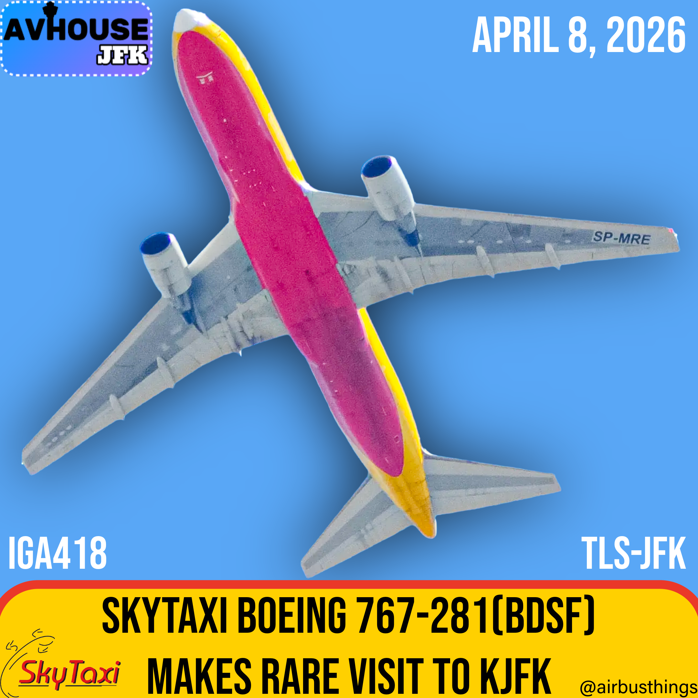
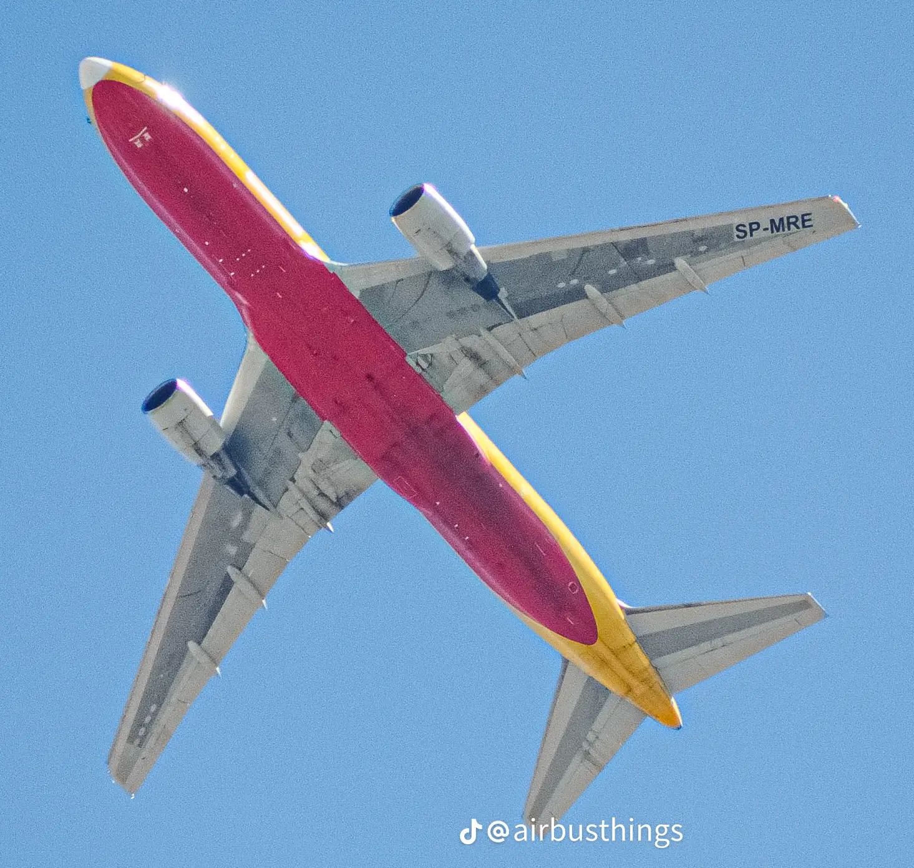

A SkyTaxi Boeing 767-281(BDSF) made a rare appearance at JFK Airport on April 8, 2026. Flight IGA418 (Iguana 418) departed from Toulouse-Blagnac Airport at 10:32 AM CEST, 32 minutes later than its scheduled departure of 10:00 AM CEST. However, the aircraft still arrived 3 hours and 37 minutes earlier than it was supposed to, arriving at 1:17 PM EST instead of its scheduled arrival time for 4:54 PM EST. The aircraft (Registration SP-MRE), showed up as a blocked Boeing 767-281(BDSF), with no flight information available. at 4:21 PM EDT, IGA418 took off from John F. Kennedy International Airport on Runway 22L, en route to Miami International Airport.
SkyTaxi aircraft are not frequent visitors to JFK, especially widebody freighters like the 767-200. Flights from Toulouse to JFK are rare, and usually indicate a special cargo mission.
SkyTaxi is a small Polish cargo airline based in Wrocław that specializes in freight and charter operations rather than passenger service. The airline operates aircraft such as the Boeing 767 converted freighter, transporting goods across Europe and occasionally on long-haul routes depending on demand. Unlike major airlines, SkyTaxi does not follow a fixed schedule, instead flying on behalf of logistics companies through ACMI leasing or ad-hoc charters. Because of its limited fleet, cargo-focused missions and unpredictable routing, sightings at major airports like JFK, are relatively rare, making appearances like this particularly notable.
The airframe operating as SP-MRE is a Boeing 767-281(BDSF) with a long and diverse history dating back to its first flight on July 22, 1985. Originally delivered to All Nippon Airways as a passenger aircraft, it later transitioned into cargo service after being converted to a freighter in the early 2000s. Over its lifetime, the aircraft has operated for multiple cargo carriers including Airborne Express and ABX Air in the United States, Rio Linhas Aéreas in Brazil, and DHL International Aviation in the Middle East and Europe. It was stored briefly in 2021 before being acquired and registered as SP-MRE, joining SkyTaxi later that year. Today, at over 40 years old, the aircraft remains active as a converted freighter, continuing to operate cargo flights across Europe and on occasional long-haul missions.